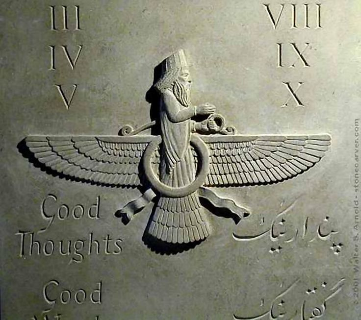

Cultura
Cultura
1. Multiculturalidad y Sincretismo Cultural
El imperio estaba formado por una amalgama de pueblos: persas, medos, elamitas, babilonios, egipcios, judíos, lidios, tracios, sogdianos, bactrianos, griegos jonios, entre muchos otros. En lugar de imponer una cultura hegemónica, los persas incentivaron el sincretismo. La arquitectura, el arte y las costumbres cortesanas integraron influencias de Mesopotamia, Egipto, Asia Central y el mundo helénico. En las capitales como Susa y Persépolis se hablaban decenas de idiomas, y era común ver convivir en el mismo mercado a comerciantes griegos, nobles medos, artesanos egipcios y campesinos elamitas. El sincretismo también se reflejó en los rituales cortesanos, que incorporaban gestos ceremoniales de distintos pueblos: el saludo babilónico, la procesión egipcia, la reverencia persa.2. Arquitectura y Urbanismo
Las ciudades imperiales eran reflejo del orden y el poder centralizado. Persépolis fue diseñada no solo como residencia real, sino como escenario simbólico de la diversidad imperial. Sus terrazas, escalinatas y relieves expresaban la jerarquía del cosmos y del estado. Susa, capital administrativa, combinaba ladrillos vidriados con relieves inspirados en la iconografía elamita y mesopotámica. Su palacio real incluía salas de audiencias, patios con jardines y estanques. La arquitectura doméstica también reflejaba una organización espacial que privilegiaba el control térmico: patios internos, muros gruesos, celosías. El "paridaida" o jardín real, precursora del paraíso en la imaginación posterior, era diseñado con canales, árboles frutales, terrazas y flores exóticas. Era un espacio ritual, estético y funcional.
3. Artes Visuales
Los relieves de Persépolis representaban a las delegaciones tributarias con atuendos típicos: los indios con elefantes, los etíopes con marfil, los lidios con joyas, los escitas con caballos. Los motivos animales eran recurrentes: leones, toros, grifos, águilas. No eran solo decorativos, sino símbolos del poder real, la protección divina y el orden cósmico. La escultura era preferentemente en bajo relieve y se evitaban las estatuas en bulto redondo, lo que marca una diferencia con griegos y egipcios. Se producía cerámica vidriada, mosaicos murales, tapices bordados, armas decoradas y textiles con tintes vegetales de altísima calidad.4. Lengua y Escritura
El imperio adoptó una estrategia lingüística funcional. El arameo, lengua semita de escritura alfabética, fue adoptado como medio de comunicación interregional. En los archivos de Persépolis (tabillas de arcilla halladas en gran número) se encuentran documentos en elamita que registran pagos, tributos, distribución de alimentos, personal administrativo, etc. El antiguo persa se escribió en cuneiforme simplificado solo para inscripciones dinásticas y con valor simbólico. Las tres lenguas principales utilizadas en inscripciones oficiales eran: antiguo persa, elamita y acadio.5. Religiones y Cosmovisión
Aunque los reyes rendían culto a Ahura Mazda, no impusieron una religión de estado. Se respetaron los cultos mesopotámicos, los templos egipcios fueron restaurados, y se permitió el retorno de los judíos a Jerusalén. El concepto central de la cosmovisión persa era la oposición entre asha (orden, verdad, justicia) y druj (caos, mentira, desorden). El rey era visto como el garante del asha en la Tierra. Por eso su acción no era solo política sino también espiritual.6. Vida Cotidiana y Sociedad
La sociedad estaba dividida en clases: nobleza guerrera, funcionarios reales, sacerdotes, campesinos, artesanos y esclavos. La mayor parte de la población vivía en aldeas agrícolas, cultivando cereales, vides, hortalizas y criando ganado. El comercio era muy activo, tanto por tierra como por río y mar. Había mercados locales, caravanas internacionales y ferias imperiales. Las festividades incluían celebraciones zoroástricas, festivales locales y fiestas de primavera como el Nowruz.7. Educación y Conocimiento
Los niños nobles eran educados en el arte de la guerra, la administración y la oratoria. El conocimiento astronómico mesopotámico fue conservado y refinado, permitiendo cálculos calendáricos precisos. En Egipto y Babilonia, los sabios locales continuaron sus tradiciones médicas, matemáticas y astrológicas. Las bibliotecas eran sostenidas por el estado, y los escribas formaban parte de una élite intelectual.8. Vestimenta y Apariencia
La indumentaria marcaba el estatus: túnicas largas, cinturones anchos, mantos decorados con bordados de hilo de oro y turbantes o tiaras. La barba era un símbolo de virilidad y dignidad. Los nobles la llevaban trenzada y perfumada. Las mujeres de la corte usaban vestidos con pliegues, velos finos y joyas con incrustaciones de lapislázuli, turquesa y ámbar.
9. Comunicaciones y Vías Imperiales
El Camino Real unía Susa con Sardes, atravesando montes, ríos y desiertos. Tenía estaciones cada 25-30 km. El sistema postal usaba jinetes que pasaban mensajes con sellos imperiales. Las calzadas reales tenían puentes, postas, almacenes y guarniciones. Facilitaban no solo el comercio sino también la transmisión cultural.10. Legado Cultural
El ideal de gobierno multicultural, respetuoso de las diferencias y eficiente, inspiró a Alejandro Magno y luego a Roma. Elementos como los jardines reales, la indumentaria persa y el modelo administrativo pasaron al mundo parto y sasánida. Incluso en la cultura islámica posterior se mantuvieron conceptos como el "rey de reyes", el paraíso ajardinado y la justicia como virtud suprema del soberano. table border="1" align="center">| 1 | 2 | 3 | 4 | 5 | Eduacion y conocimiento | Multiculturalidad y Sincretismo Cultural | Arquitectura y Urbanismo | Artes Visuales | Legado cultural |
|---|